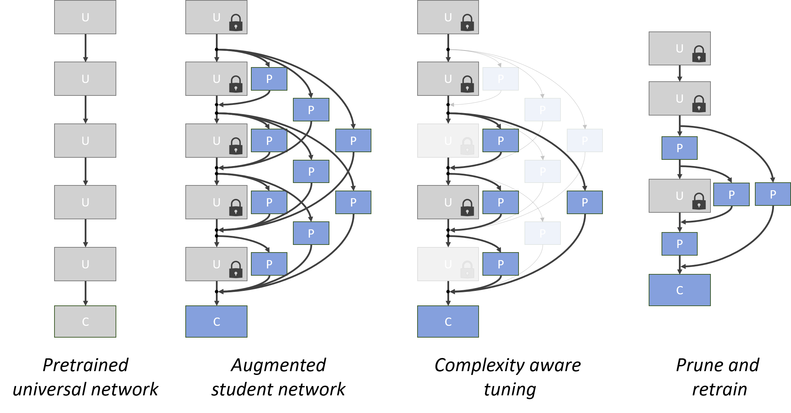
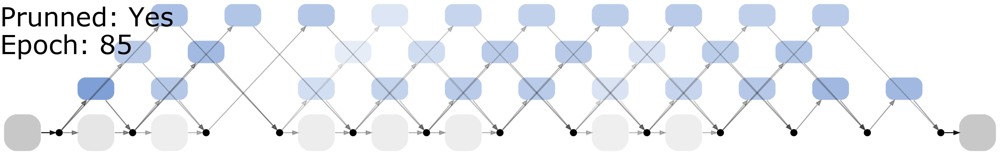
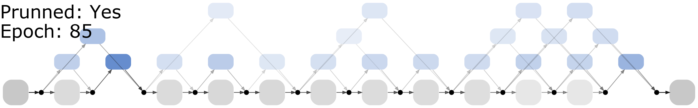
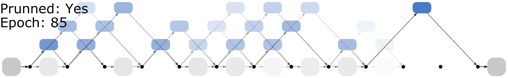
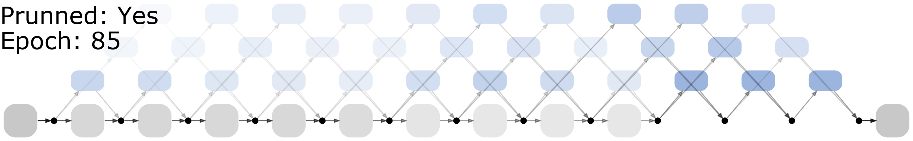
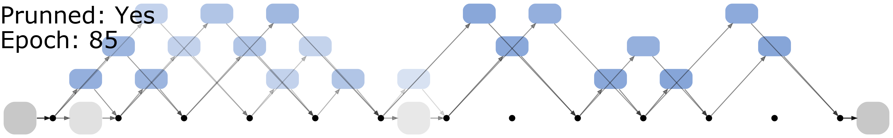
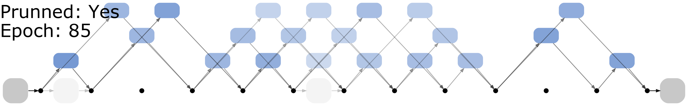
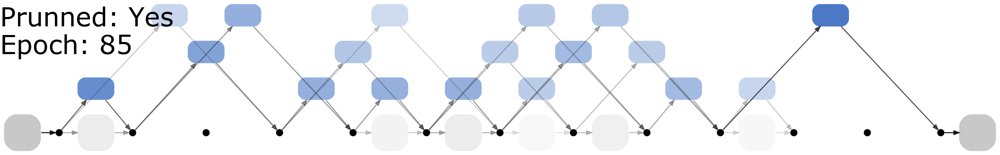
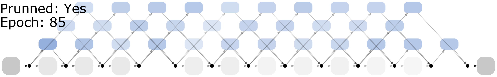

NetTailor

Schematic representation of the NetTailor procedure.
Procedure
- Pre-train universal network on source task (ImageNet).
- Train teacher network by fine-tuning universal network on target task.
- Define student network by augmenting the universal network (gray blocks) with task-specific low-complexity proxy layers (blue blocks).
- Train proxy layers on target task to:
- Optimize classification performance.
- Mimic internal activations of the teacher.
- Satisfy complexity constraints that encourage the use of low-complexity layers.
- Prune layers with low impact on network performance.
- Fine-tune remaining task-specific parameters.
Source code and trained models available on GitHub.
Architectures
Final architectures produced by NetTailor on several datasets from the Visual Decathlon challenge. Gray boxes represent univeral blocks. Blue boxes represent task-specific blocks. The attention weight associated with each block is encoded in its opacity. Hover over each image to see the evolution of attention weights during training .
Aircraft

CIFAR-100

Pedestrian

DTD (Textures)

GTSR (Traffic Signs)

Omniglot (Characters)

SVHN (Digits)

Flowers
